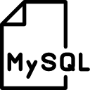
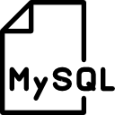

Olá! Meu nome é Hyanca Moura e sou estudante de Análise e Desenvolvimento de Sistemas na Universidade Positivo.
Nasci em 1996 no Distrito Federal, mas moro em Curitiba há 19 anos. Cursei o ensino médio integrado com o curso de informática no Colégio Estadual Pedro Macedo, onde tive meu primeiro contato com desenvolvimento de software.
Com 16 anos passei a morar sozinha e consegui meu primeiro estágio na área de T.I. na empresa EDUTEL, na qual permaneci por um ano. Em 2013, logo depois de finalizar o estágio, fiz parte da equipe da empresa Decisão Consultoria e Cobrança por cinco anos, onde exerci tarefas administrativas envolvendo também a área de recursos humanos. Desde 2017 estou cursando Análise e Desenvolvimento de sistemas na Universidade Positivo
Experiências
Meu primeiro estágio foi em 2012 na empresa EDUTEL onde tive a responsabilidade de auxiliar na manutenção de computadores e no atendimento aos clientes, passando informações sobre os serviços da empresa e esclarecendo suas dúvidas.
Em 2013 comecei um novo estágio na empresa Decisão consultoria e cobrança, onde atuei no setor administrativo. Minhas responsabilidades incluiam prestação de contas, análise de resultados, auditoria e revisão de sistemas de controle interno e importação de remessas no sistema. Fiz parte da equipe até 2018, quando decidi atuar na área de desenvolvimento de software.
Conhecimentos


 
